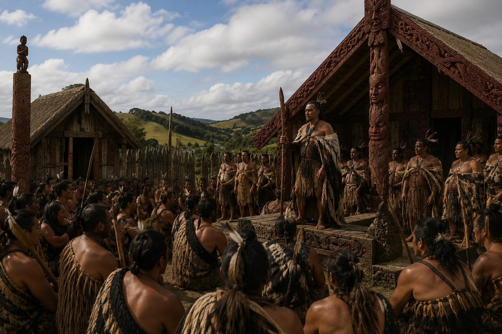
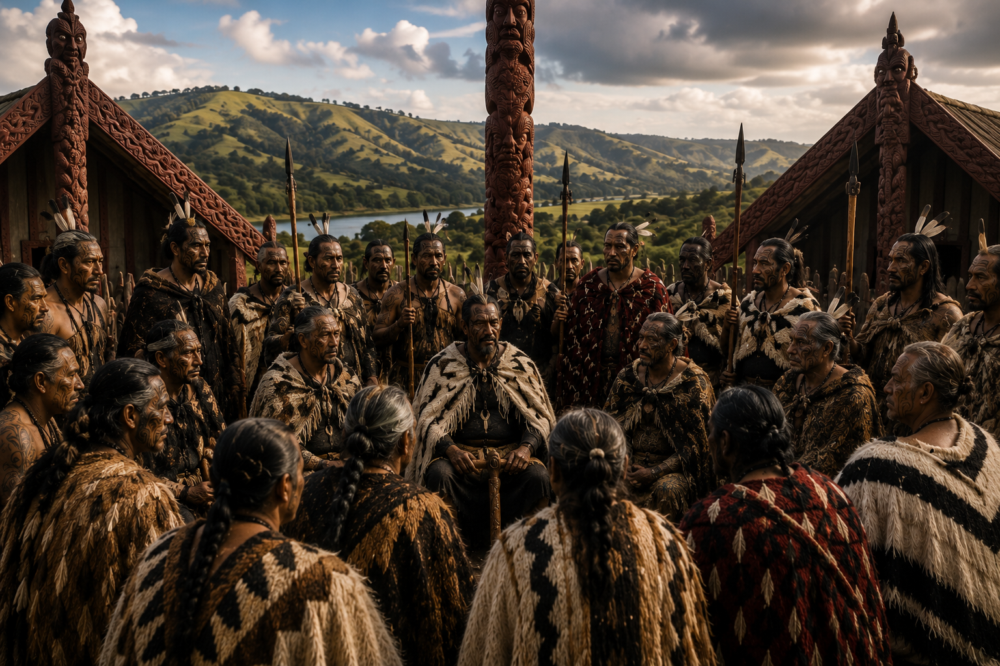
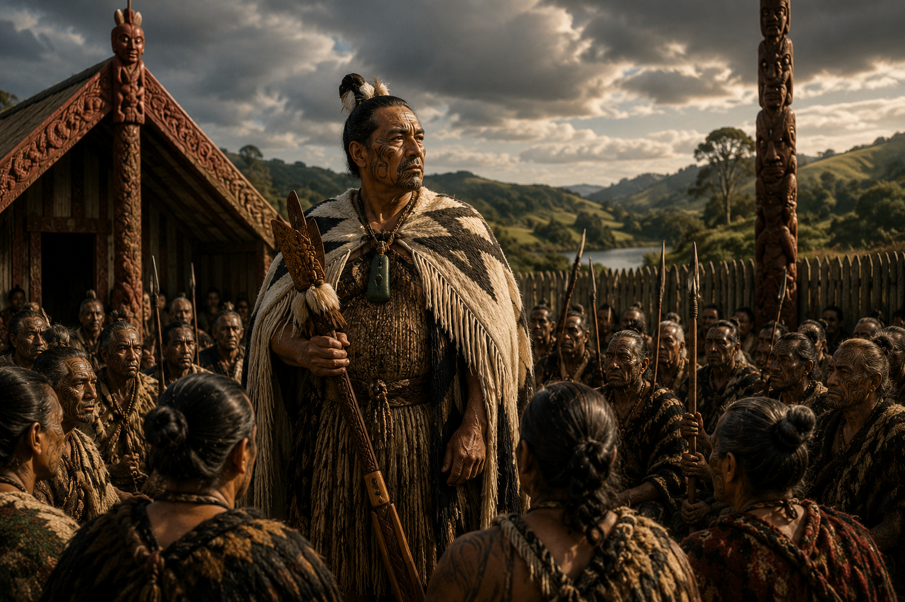
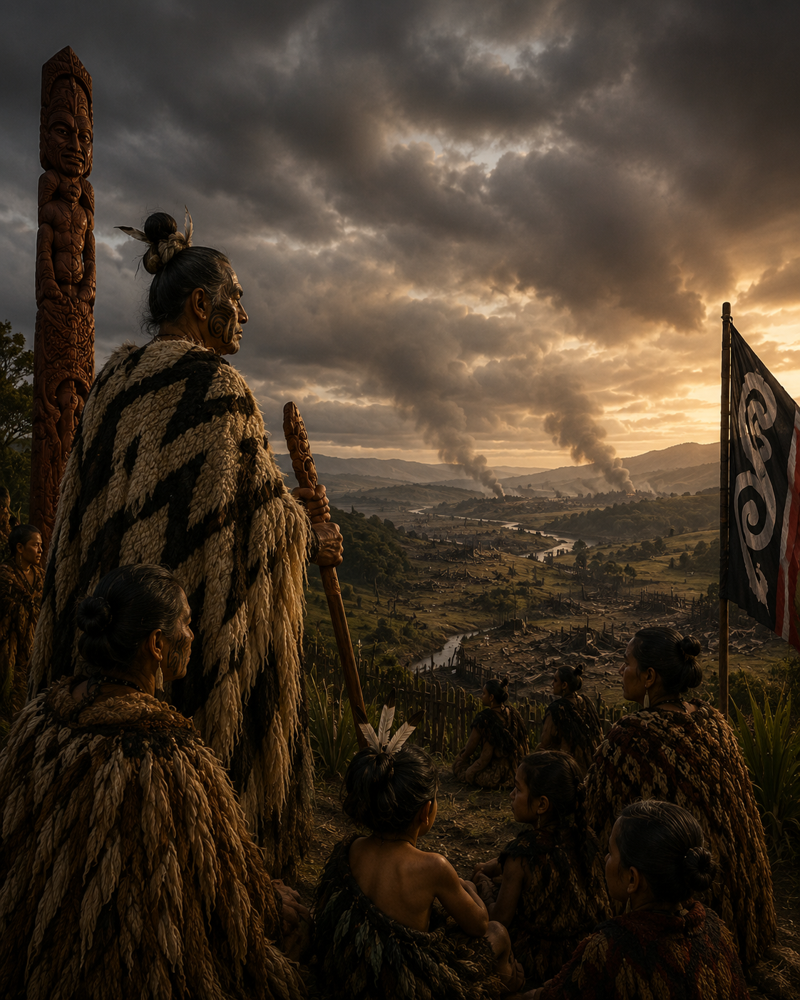
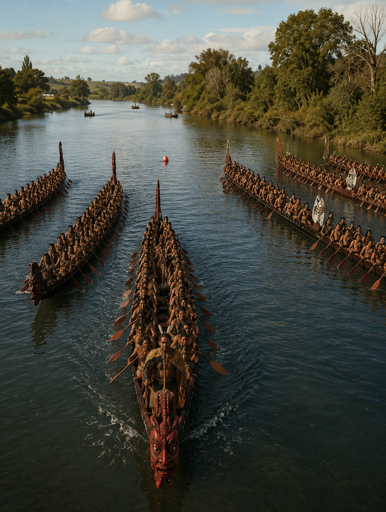

Read the Story
Part 1: Before There Was a Māori King
Long ago, Māori did not have one king. Each iwi had its own rangatira. These leaders cared for their own people and land.
Iwi worked together at times, but they were not ruled by one person. Leadership came from whakapapa, mana, courage and service.
By the middle of the 1800s, life was changing quickly. More settlers were arriving, and Māori leaders were becoming worried about the future.

True or False
Choose the correct answer.
Māori always had one king.
Each iwi had its own rangatira.
Memory Flip
Click each card to reveal the answer.
Part 2: A New Idea
During the 1850s, some Māori leaders began discussing a new idea. They believed that one respected leader could help bring different iwi together.
The movement was not created because Māori suddenly wanted to copy the British monarchy. Its supporters wanted unity. They hoped a shared leader could strengthen Māori authority and help protect land from being lost.
Leaders travelled, met and debated. They did not agree immediately. Choosing one person to represent many iwi was a serious decision.
Slowly, the idea of a Māori king began to grow.

Multiple Choice
Choose the strongest answer.
Why did some Māori leaders support the idea of one king?
Put the Ideas in Order
Select the statements from first to last.
Short Answer
Explain the main idea in your own words.
Part 3: Choosing Pōtatau Te Wherowhero
The leaders of the movement needed someone whose mana reached beyond a single community. They considered several important rangatira before turning to Pōtatau Te Wherowhero of Waikato.
Pōtatau was respected for his whakapapa, experience and relationships with many iwi. He was not chosen because he demanded power. He was chosen because others believed he could carry a difficult responsibility.
In 1858, Pōtatau became the first Māori King. His role was intended to unite people rather than erase the authority of individual iwi and rangatira.
The Kīngitanga was therefore both a new institution and an expression of older Māori values: collective responsibility, protection of the people and leadership through service.

Vocabulary
Use the meanings to understand the text.
Inference
Think beyond what is directly stated.
Check the Detail
Choose the best answer.
Why was Pōtatau selected?
Part 4: More Than a Crown
The Kīngitanga represented more than the crowning of one man. It offered a way for Māori communities to cooperate while retaining their own identities and leaders.
Supporters saw the movement as a source of unity and protection. They wanted decisions about Māori land and communities to remain in Māori hands. The movement created rules, gatherings and shared symbols that strengthened this collective purpose.
Many colonial officials viewed the same development differently. They feared that an independent Māori authority could weaken the power of the Crown. What supporters understood as protection and unity could therefore be described by opponents as resistance or rebellion.
This difference in perspective became increasingly important. The conflict was not simply about whether there was a king. It was about who held authority, who controlled land and whose decisions would shape the future.

Two Perspectives
Compare how the same movement could be viewed differently.
Writer's Purpose
Think about why the author includes both viewpoints.
Why does the author present both viewpoints?
Part 5: Why the Kīngitanga Mattered
By the early 1860s, tension between the colonial government and the Kīngitanga had become severe. Governor George Grey presented the movement as a challenge to Crown authority and prepared for military action in Waikato.
In July 1863, British troops crossed the Mangatāwhiri Stream and entered Waikato. This began the invasion of Waikato. Grey claimed that military action was necessary to protect Auckland and secure the authority of the government.
However, many historians and Māori accounts argue that the invasion was a choice rather than an unavoidable response. They point to earlier military preparations, the construction of the Great South Road and the absence of a Kīngitanga attack on Auckland before the invasion.
The war caused deaths, displacement and the confiscation of vast areas of Māori land. Yet the Kīngitanga survived. It continued as a source of identity, unity and leadership through generations of pressure and change.
Understanding the Kīngitanga therefore requires more than remembering dates. It requires asking how power was described, whose fears were believed, whose voices were ignored and how decisions made in the past continue to shape the present.

Historical Thinking
Use the evidence in the text.
Theme and Legacy
Explain the deeper meaning of the section.
Final Check
Select the best answer.
What is the main idea of the final part?